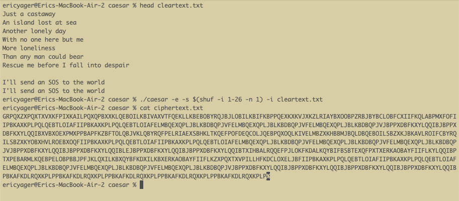
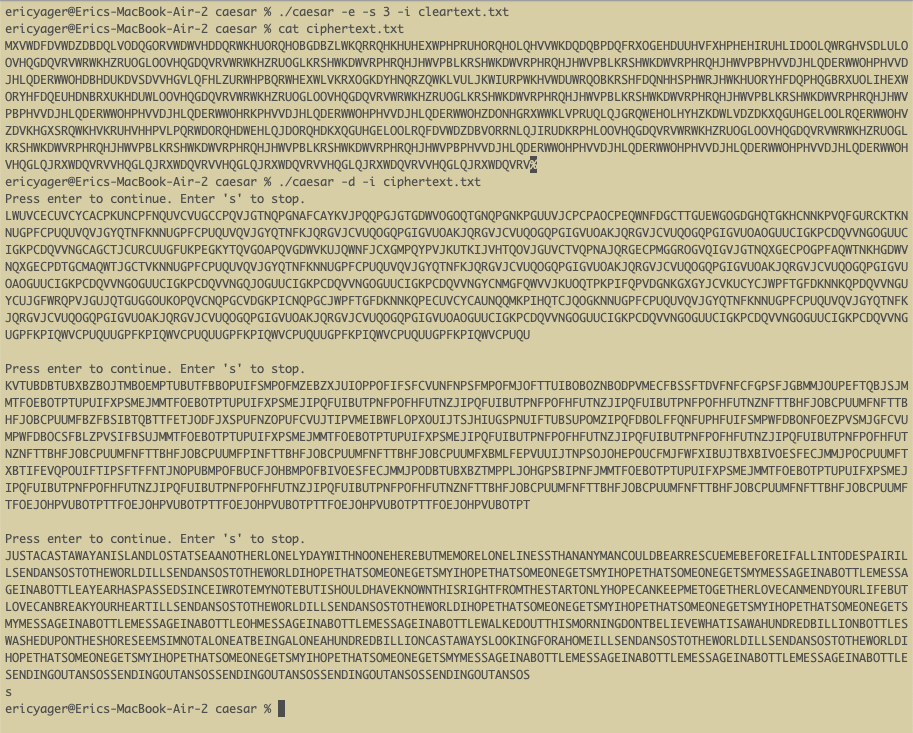
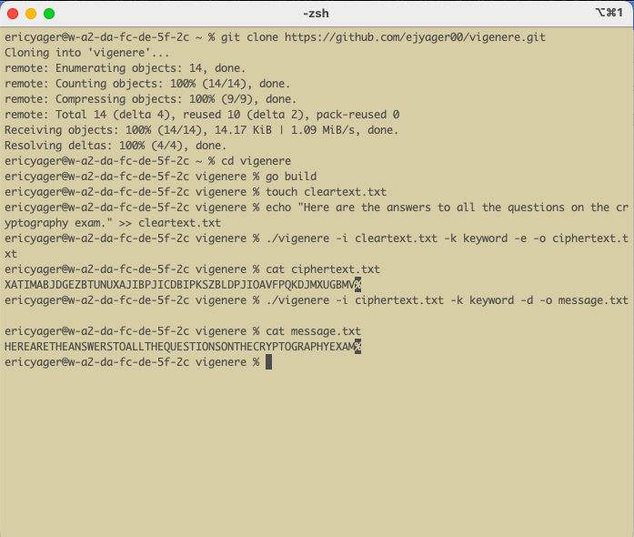

Encryption with Go
In Spring 2022, I took a course about cryptography. For some of the assignments, we needed to implement encryption algorithms. I did not implement any that would be considered secure by modern standards. However, I did code up a couple of command line apps in Go to encrypt using cipher techniques. The techniques I implemented are the classic Caesar cipher and the historically-renowned Vigenère cipher.
These projects weren’t too challenging, but I learned about command line flags in Go and practiced file handling.
Caesar Cipher
Source Code
The source code for this project is available on GitHub.
Pictures

Caesar cipher program encrypting a message.

Caesar cipher program decrypting a message.
Vigenère Cipher
Source Code
The source code for this project is available on GitHub.
Pictures

Encrypting and decrypting with a vigenere cipher.

Author: Eric Yager
Eric is a computer science & mathematics student and teaching assistant at Valparaiso University. He is also President of Valpo's student chapter of the Association for Computing Machinery (ACM) and Vice President of Valpo's Math Club. He likes to play chess (especially the bughouse variant), program in Go, and tent camp with friends.